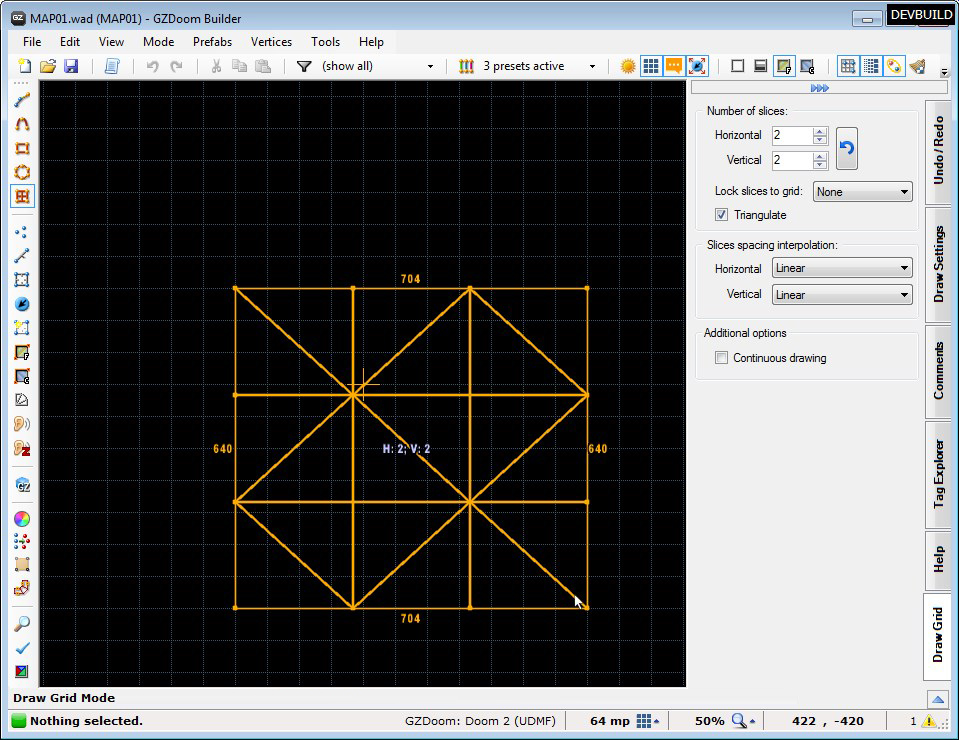

此模式让你绘制网格。
菜单路径：模式 -> 绘制网格。
动作类别：绘制。
默认按键：无。
附加动作：提高细分级别、降低细分级别、增大拐角斜切、减小拐角斜切。
你可以使用侧面板或"提高/降低细分级别"和"增大/减小拐角斜切"动作来改变水平和垂直切片数量。
更改"将切片锁定到网格"设置，可让切片数量在水平、垂直或两个方向上匹配当前网格大小。
如果你想创建三角形而不是四边形，请勾选"三角化"。
勾选"连续绘制"，可在绘制完成后禁用自动切换回之前的编辑模式。
